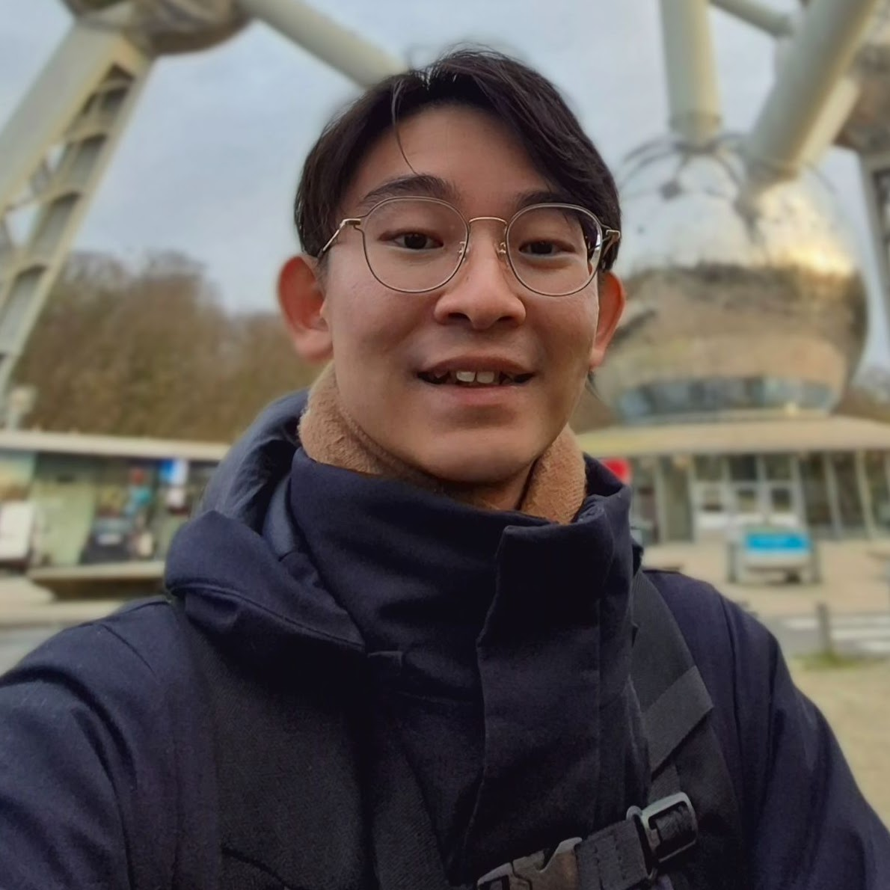

Junheng Chan
Research Associate, LanTERN Project, Nanyang Technological University, Singapore
I am a Singaporean linguistics researcher interested in experimental phonetics, contact phonology, and speech variation in multilingual contexts. My work examines how speech sounds are produced, vary, and adapt, with attention to both acoustic and articulatory correlates. Alongside this, I am involved in documentation-oriented work on Singaporean Hokkien and under-described languages.
Current research direction
How speech sounds are shaped by phonetic detail, phonological structure, and multilingual contact.
My current research direction centres on how speech sounds are shaped by the interaction of phonetic detail, phonological structure, and multilingual contact, especially in Singapore and the wider Southeast Asian region. I am interested in moving between fine-grained empirical evidence, such as acoustic and articulatory patterns, and broader questions about how sound systems adapt, reorganise, and become conventionalised in real multilingual settings. This direction connects my work in experimental phonetics and contact phonology, while also drawing on documentation-oriented data collection where it supports the analysis of under-described or local varieties.
Featured projects
- Protruded jaw setting and /v/
- Singaporean Hokkien-Malay contact (SgH-SgM)
- Phonetic documentation of under-described varieties
- Protruded jaw setting and /v/: MRI-based work on how a protruded jaw setting affects /v/ articulation, including variation between labiodental and dentolabial realisations.
- Singaporean Hokkien-Malay contact (SgH-SgM): work on how Malay loanwords are adapted into Singaporean Hokkien, focusing on consonant correspondences, tone, coda stops, and possible stress-tone relationships between SgM and SgH.
- Phonetic documentation of under-described varieties: documentation-oriented phonetic analysis of under-described languages and local varieties, including Siyuewu Khroskyabs and Singaporean Hokkien.
Research approaches
- Articulatory imaging
- Dimensionality reduction
- Contour modelling
- Contact and documentation data
- Articulatory imaging: MRI-based analysis of vocal tract configuration and segmental realisation.
- Dimensionality reduction: PCA of high-dimensional articulatory data to characterise patterns of variation.
- Contour modelling: time-normalised acoustic trajectories and GAMMs for comparing prosodic and tonal patterns.
- Contact and documentation data: elicitation, transcription, and annotation workflows for analysing under-described and local varieties.
Selected presentations
- LabPhon 20, 2026
- SEALS 35, 2026
- LabPhon 20, 2026: “The Influence of the Protruded Jaw Setting on Labiodental Fricative /v/” (poster presentation).
-
SEALS 35, 2026:
- “The Influence of Coda Stops on Tones in Singaporean Hokkien” (oral presentation).
- “Stress-Tone Correspondences of Malay Loanwords in Singaporean Hokkien” (oral presentation).
- “Consonant Correspondences of Malay Loanwords in Singaporean Hokkien” (workshop poster presentation).
I am interested in future PhD opportunities in experimental phonetics, contact phonology, and quantitative analysis of speech variation, especially work grounded in empirical data from multilingual settings and under-described languages.